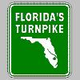
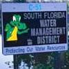
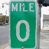

Here I am, embarking on the glorious journey that will go down in HISTORY as Spring Break 2004. Yes, we've come a long way to get here, but now it's finally come. This will be my third college spring break trip with Missy, and I have high hopes that this will be the best of all. The last two trips have been good, but they were certainly fraught with challenges.
My freshman year it was Missy, me, and Gen. We all recall the "Cocoa Krispies" incident very well, which lead to about a month of silence between me and Genevieve. Also, the idiocy of me refusing to put sun tan lotion on my ankles led to two very boring days in the hotel suffering from, what one hotel patron called "lobster legs". The location got kind of boring as well. We all had to pile in Missy's Mustang for a two hour drive just to go out to a decent club. Last year was a vast improvement. I especially went to lengths to prevent myself from grating on my hotel roommate's nerves. However, some "issues" arose between myself and Sonya (and Missy at times too), and we ended the break parting ways for a good while, only recently hanging out again. Needless to say, Spring Break hasn't always been the best of times...
However, Missy and I hope to have more fun than a barrel of monkeys this year! Sure, Key West lacks a certain "skankiness" that a place like New Orleans offers, but we've come up with a good solution for that. Instead of staying in one place for the week, we're going to several places around Florida. Our first stop is in Orlando, where I'm really not sure what we're going to do. I plan to work on my term paper a little :-/ maybe do some pool side reading. After that we're going to our major destination, Key West. I'm really excited about being here again. It's so beautiful down there, so close to the Tropics. I want to go walking on a sandbar, avoiding crabs of course! Our last night will be in Miami where hopefully I will find my cousin off somewhere. Missy will probably be clubbin', and I suppose I'll be off w/ her. I'm excited about going around Florida, where I used to live--especially South Florida! I'm not really telling anyone, but I kind of want to eat lunch in Boca Raton on our way to Key West. Going there would be incredible, I haven't been since I moved to Georgia when I was 12.
For now, I'm actually out of Athens already--at Missy's house. Her parents are mad at her, and are kind of scary in general right now. I just heard her Mom demand to see Missy's blood test results...I mean, what does she expect to find? I'm happy to know my Mom isn't a freak like that. Sometimes I get the "I'm worried about you's" from her, but she never goes as far to audit my medical records! Well, Michelle is making me some filet minion, so I guess I'll keep my criticism to myself.
Tomorrow: term paper phone calls, visit from Jen, somehow fetching Matt from Athens, avoiding Missy's parents :-x

So, we're on the road, at last! We're just south of Ocala now. Missy and I looked at a map of Florida at a rest stop...not far til' Orlando. I think we're going to have some "spirits" tonight--Matt said to me last night that he really misses being drunk. Wouldn't want to disappoint. Must say, I'm surprised we've made it this far...
Last night was a nightmare! Basically, Alex found out at the last minute that he had to go to court on Thursday for something, and he didn't bother to let Missy or me know that he was sure he'd be out for the trip indefinitely until about midnight last night. Not cool man. He was our ride, and he was two parts (him and his friend) of the money we were going to pay for the hotels and stuff. Basically, our entire trip has changed because he didn't give us ample notice about his cancellation. Fortunatly, he said he'd pay for cancellation stuff, his share of it. That's decent. It's the least he can do...it's sorry he can't come along, I think we'll have alot of fun.
Well, my battery doesn't last long, so how's that for an update? Expect an entry from the Magic Kingdom tomorrow! Bye bye all!
So Missy and I just got back from freaking out the Jesus freaks. We were in the spa and I went down on her (down meaning tickling her feet underwater) to the shock and dismay of our Christian friends here at the Staybridge Suites. Must say it's very relaxing to take a dip in a spa again...I believe it was last year that I last had the pleasure--with Missy of course. Certainly it was a stress buster after a long day in the Magic Kingdom...
Yah, so I stand by my observation that Disney World sucks and it's really just for kids. I enjoyed some stuff though. The teacups were alot of fun, I didn't puke, but I enjoyed trying to make Matt and Missy blow chunks. I finally got to ride Space Mountain, and it's scary! I mean, thrilling wise, it's pretty tame, but I felt like at any moment I would have been injured! We were flying around in the dark on some roller coaster, and all I could think about was maybe stretching out my hands and getting them taken off as I rocketed past a support beam or something--I mean, it's indoors! Scary stuff... Splash Waterfalls was fun (got wet). After lunch we hit a streak of really sucky rides. I can only take so many lifeless trips though various Disney cartoons and movies before I've had enough.
Must say that I was glad Missy got to relive parts of her childhood. We were kind of itching to go to Epcot...seemed so much more interesting. Park hopper passes are just too much though. I've spent $70 so far on Disney attractions, it's enough!
Tonight we're doing City Walk, hopefully we'll find a better bar than last night. Pleasure Island was anything but that...it was a haven for twenty-to-thirtysomething has-beens. Missy seemed to attract everyone one, but I don't blame them...who wouldn't want to get with that. Any young, virile young guys that were present were already claimed by brainless blond twits--not the best situation for our hero Missy. Oh well, round two tonight!
By the way, our suite here in Orlando is like nothing I've seen before (for the price, I should say). Matt and I have a very spacious king bed and Missy's got her own room with two queens. If Alex and Jessica had come, they'd have slept in there surely. I told Missy she should have used one of the beds last night and the other tonight...but since last night was such a dud, looks like she'll have to do a double-header tonight ;-)
Tomorrow, I'll be homeward bound--to Boca Raton. Haven't been in years, very much looking forward to a stroll down memory lane. I really hope I remember my way down Glades Rd. Shouldn't be too hard. Bet the place has gone to Hell since I pulled up stakes and left town. Going to eat at Wilt Chamberlain's for lunch, maybe see if I can find the old house (in Boca Woods of course!) After that, we'll zip down to the Keyes for some sun bathing and maybe THEN finally I can get my drink on. Being DD sucks, but it's the right thing to do :-)

Uh...so now I'm at the southern-most point in the U.S. and I'm exhausted! We must have spent hours couped up in that convertible--it took forever! Missy said the icon today should have been a speedometer at 35 miles-per-hour because it seemed that took up the majority of the day.
Well, when we weren't jumping on and off the Florida Turnpike, we were crusin' around Boca Raton. I went home again for the first time! Wow, it was really weird driving down Glades Rd. and 441 again. I didn't really remember how to find Wilt Chamberlain's, but I went straight to Boca Chase--my old house. Matt took a picture for me. I also found Jaimie's old house. I had a big crush on her in sixth grade. I went around the old Publix we used to shop at, the movie theater, where the Kenny Rogers used to be, etc. Also saw Sandpiper Shores, my last elementary school (I had approximately four in my seven year tenure). I would have gone looking for Logger's Run, but I think Missy and Matt had enough of reminiscencing for one day.
After that, we drove through the rest of South Florida, skipped what seemed to be twenty-some island keyes before arriving at Key West at about 8 p.m. Sadly, our hotel here is not nearly as cool as the one in Orlando. Damn, I don't think we'll ever find something as nice as that again.
Anyways, better soak up as much Key West time as I can! Going home on Saturday...can't wait to see you all again!

Well, I'm not sure what ocean or gulf I swam in today, but I swam in something! There were rocks and weeds and I couldn't see the ground--my fear of crabs consumed me so I sat on the beach instead, ran in a few times to reapply sun tan lotion, and showered a bunch to get the grody sand off me. The pool here is nice, about the only nice place about this dive. Tomorrow, we've decided to stay in Miami for an extra day. Going to rest up for the parties that are sure to happen tomorrow...
Tonight, I don't have much to offer...so here's my Spring Break playlist! I threw it together at the last minute, I'm not sure it's any good. Seems fun to listen to in the car. I think the big hit is "Fuck the Pain Away", have you heard that song?! It's some crazy shit. Peaches is one crazy bitch. Don't listen to this around your mother. Anyways, hope you approve.
- Elton John - Goodbye Yellow Brick Road
- Kylie Minogue - Come Into My World
- garbage - Temptation Waits
- Tracy Chapman - Fast Car
- The Cure - Pictures of You (Extended Mix)
- Blind Melon - No Rain
- Crystal Method - Born Too Fast
- Peaches - Fuck the Pain Away
- The Strokes - 12:51
- Echo and the Bunnymen - Lips Like Sugar
- No Doubt - It's My Life
- Roxette - She's Got the Look
- garbage - I Think I'm Paranoid
- Elton John - Someone Saved My Life Tonight
- Fountains of Wayne - Stacy's Mom
- Beach Boys, the - Kokomo
- Joey Ramone - Stop Thinking About It
- Aha - Take On Me
Well, I'll make this one the shortest of all. Turns out we didn't want to tackle an 18-hour drive, so we decided to crash in Miami for the night. I'm actually resigned to my hotel room right at the moment. Missy's likely checking out the bars on South Beach and I think Matt is a bit famished and has gone on a trek for some decent food. We ate at this Cuban place and the service blew. I had an interesting Vaca Frita dish, very delicious. At least it worked out for me :-)
Tomorrow, we're driving back. Term paper stress is sinking in, what will I do?! Well, expect a debriefing maybe Tuesday when I'm done running around Monday...it's going to be a busy day. Another Spring Break has come and gone...1,600 miles and it's still not enough.